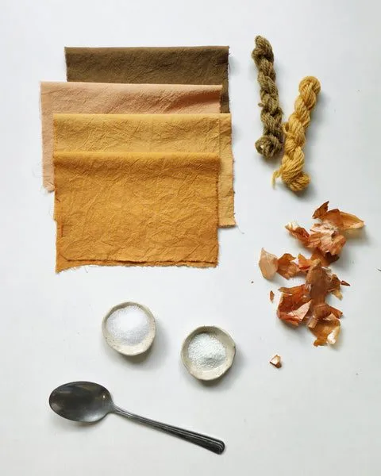

This is a post on natural mordants. It was originally published in my Substack's “Plant Dyeing” section, where I share tips, recipes, tutorials, and resources for those interested in dyeing with plants.
I chose this subject because it's the question I get most often: how can I make botanical colors last using natural methods?
Natural mordants
First, we have to define natural. I often hear from people who want to skip “chemical” substances and only work with natural ingredients to make plant colors last. Let me jump in right here: traditional mordants, like aluminum, iron, or copper, are both chemical substances and they are natural. Just like botanical dyes have their own chemical structure, so do traditional mordants, and so does soy milk or tannins. Chemical and natural are not mutually exclusive.
Now let's define mordants. A mordant is a substance that connects with fibers and improves the stability of natural color. Mordants make natural dyes less likely to fade or wash off. There are different mordants available, but they all have two things in common: they are always metal salts, and they are able to form an insoluble connection with fibers and dyes. There are different metal salts available, like aluminum salts, iron salts, copper salts, and so on. They all require different recipes and work best on different types of fibers.
Other natural substances
There are other substances that allow for better uptake of plant color, like soy milk. But in contrast to mordants, soy milk does not form a permanent bond with the fibers and dyes. Rather than a chemical connection, it works as a sort of mechanical “protein film” that layers on top of the fiber and glues the dye and the fiber together. This “glue” is soluble and might degrade over time. Therefore, soy milk is not a mordant, it is a binder.
Another alternative to metal mordants is tannins. They can be found in many leaves, seeds, roots, and stems. Just like soy milk, they are not able to form any insoluble bonds with fibers, but they might improve lightfastness. They will usually stay true or might even darken when exposed to sunlight, but bleach if vigorously washed.
List of mordants (insoluble substances)
Aluminum salts are the most commonly used mordants. They are easy to use and make natural dyes lightfast, washfast, and vibrant.
Potassium aluminum sulphate (PAS or alum) can be used on animal fibers. It requires a hot mordanting bath. When combined with tannins, it works on plant fibers too.
Aluminum acetate is a cold mordant that works best on cellulose fibers and silk. It has to be either “dunged” after mordanting or applied onto a layer of tannins, like PAS.
Aluminum formate is my mordant of choice, a cold bath that doesn't require any additional treatment and works on all kinds of fibers. Unfortunately, as far as I know, it's only available in Germany.
Aluminum lactate is a mordant I recently found out about but still haven't tried, so I won't go into any more detail. If it's available in your country, it might be worth researching. There might also be other aluminum compounds available to you.
Iron salts can be used either as a mordant or as a modifier, as iron “saddens” and darkens many dye plants.
Iron sulfate comes in the form of iron crystals. It is best used on plant fibers. It should be used sparingly on animal fibers, as it might deteriorate them.
Iron acetate is a much gentler choice for dyeing wool and silk, but it can't be purchased, only homemade. Iron acetate has a short shelf life and takes about 2 weeks to develop at home, using steel wool and white vinegar.
Copper, tin, and chrome are some of the other metals that can be used in natural dyeing. They might be potentially unsafe to humans or ecosystems. I never felt inclined to work with them, so I will leave it as a mention only.
List of binders (soluble substances)
Soy milk is a great alternative for dyers who don't sell their work and don't care about the extreme longevity of the color. The connection it forms with fibers is not fully stable and might degrade when exposed to sunlight or washed. It is a good way of improving color uptake, though, and it's safe to use around kids. It can be used in many creative ways, and I like to play with it for my own wardrobe.
Tannins can be used by themselves or to improve the lightfastness of other dyes. Tannins come in many colors — beige, yellows, and pinks. Combined with iron, they make a range of dark colors like gray, moss green, and brown. They make a great base for over-dyeing with less stable colors.
List of alternative processes
Indigo dyeing is a process that doesn't require mordants. Indigo works by oxidation, which turns this dye into insoluble pigment when exposed to air.
Acid dyeing involves mixing dyes, tannins, and acids in one bath, without mordants. It works only with selected plant dyes and is lightfast but not washfast in high temperatures. I am planning to cover an acid dyeing experiment in a future post.
What's not a mordant (nor a binder)
Salt, white vinegar, baking soda, citric acid — they do not have any influence on the color stability or intensity. They neither fix nor bind natural dyes. They are sometimes listed as fixatives in articles from inexperienced dyers, mostly because of misconceptions and misunderstandings (mordant = metal salt, but ≠ kitchen salt).
Whichever fixative you decide to use, you should run your own lightfastness tests in order to examine how durable your results are. Color stability depends not only on the fixative used but equally on the dye plant you choose to dye with.
Samples
Finally, to illustrate how different mordants influence color, I dyed a few swatches pre-treated with different natural substances. I used onion skins on cotton and on wool. Onions make a wonderful dye, they are easy to obtain, and they allow for much play when combined with mordants and binders.
Top to bottom I used:
- Iron sulfate as a mordant, resulting in olive green
- No treatment, just onion skins on washed cotton, making a nice pastel shade
- Soy milk as a binder, enhancing the color to yellow/orange
- Aluminum formate as a mordant, deepening the color to vibrant orange
To the right I also laid two tests on wool:
- Iron sulfate mordant (olive green)
- Aluminum formate mordant (yellow/orange)
